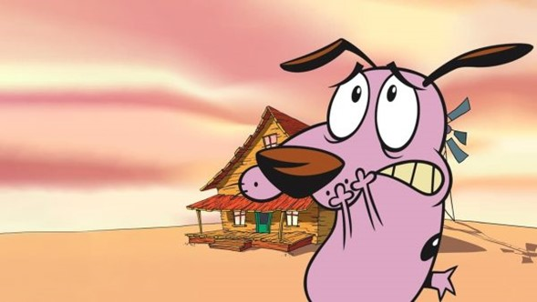

Fallece David Steven Cohen, guionista de “Coraje, el perro cobarde”

David Steven Cohenstrong>, el talentoso guionista detrás de la serie animada “Corajestrong>, el perro cobarde”, falleció este sábado a los 67 años. Su legado en el mundo de la animación infantil y juvenil es recordado con cariño por generaciones de espectadores.
La noticia ha provocado una ola de mensajes de agradecimiento y homenaje por parte de sus seguidores en redes sociales. Cohen es recordado por su estilo único y por combinar humor, suspenso y enseñanzas valiosas en cada capítulo de la popular serie.